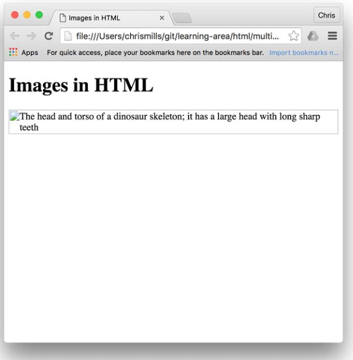

HTML中的图片
任务目标：
在HTML页面插入简单的图片
为图片添加简单的说明
CSS背景图片与HTML图片的关系
HTML中只有文本过于单调，所以网页需要嵌入图片等多媒体(不过在HTML中嵌入的东西都是有其语义或者意义的，只是装饰图片的话要使用CSS的background-image:url();)。
在HTML页面插入简单的图片
<img>
先从img标签说起，img是空元素没错，但是W3C还是推荐在空元素里加上"/"的。
1.src(全称source)属性表示引用的图片路径。
细节：1.路径推荐使用相对路径！绝对路径会加大浏览器的工作量( 例如重新通过 DNS 再去寻找 IP 地址)！
2.图片名要描述好图片，不能随便命名为img123之类的！
3.注意版权，不要盗链（hotlinking）。
2.alt(全称altnative)属性表示备选文本。
作用:当图片无法显示时显示备选文本，要有详细的文字描述(已经有就不用了，直接alt=""也可以)！
效果：跟刚刚浏览网页，图片还没加载完成时一样。
意义：1.方便屏幕阅读器 用户 2.防止自己打错图片名 3.用户关掉显示图片时使用 4. 便于搜索引擎SEO查找
3.title属性并不包含有意义的信息 。
作用：鼠标悬停图片时显示文本，当没有空间显示文本时更有用。
4.with、height宽高属性（不需要加px单位，但是要有冒号代表值！！），例：width="200" height=171""
注意:调整图片大小应该使用CSS而不是HTML。
<img src="images/dinosaur.jpg"
alt="The head and torso of a dinosaur skeleton;
it has a large head with long sharp teeth"
width="400"
height="341"
title="A T-Rex on display in the Manchester University Museum">
alt:

title：
为图片添加简单的说明
<figure>（HTML5）figure 图形
<figure><figcaption></figcaption></figure> 为图片提供一个语义容器，在标题和图片之间建立清晰的关联,为图片搭配说明文字。
<figure>是一个独立的内容单元，不一定是一张图片，可以是几张图片，表格，音视频，代码，方程等，作用：为主要内容作补充说明。
添加<figure>会有默认样式，会让图片往右下偏:从谷歌的检查工具实践得知。
<figure>
<img src="images/dinosaur.jpg"
alt="The head and torso of a dinosaur skeleton;
it has a large head with long sharp teeth"
width="400"
height="341">
<figcaption>A T-Rex on display in the Manchester University Museum.</figcaption>
</figure>
CSS背景图片与HTML图片的关系
如果图像对您的内容里有意义，则应使用HTML图像。 如果图像纯粹是装饰，则应使用CSS背景图片。